전체14쪽 PDF · 해석 · 모든1,309개 step 수치
① PS root/layout 구성 ② 이름 없는 PS dispatch 준비 구간 ③ PS merge 이후 미계측 후처리 ④ 다음 명령 수신 대기. 세로 점선 이후에는 다음 step의 요청 수신을 표시했습니다. DS/PS graph 안은 forward 횟수만큼 흰 점선으로 등분했으며 실제 forward 시간 경계가 아닙니다. 주황색 PS prepare는 A(root/가시성)와 B(graph 입력 버퍼)로 나눴고, 마지막의 다음 요청 수신은 파란색으로 구분했습니다. 미계측 구간을 GPU idle로 단정하지 않습니다. 원래 막대/색/무늬는 유지하고 관측된 command receive와 다음 request receive를 추가했습니다. 원본 raw와 기존 그림은 보존했습니다.
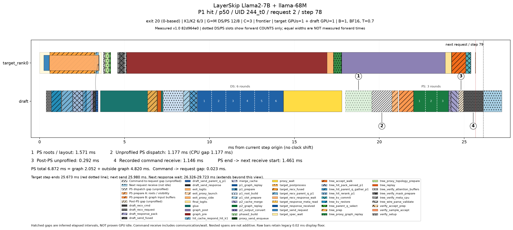
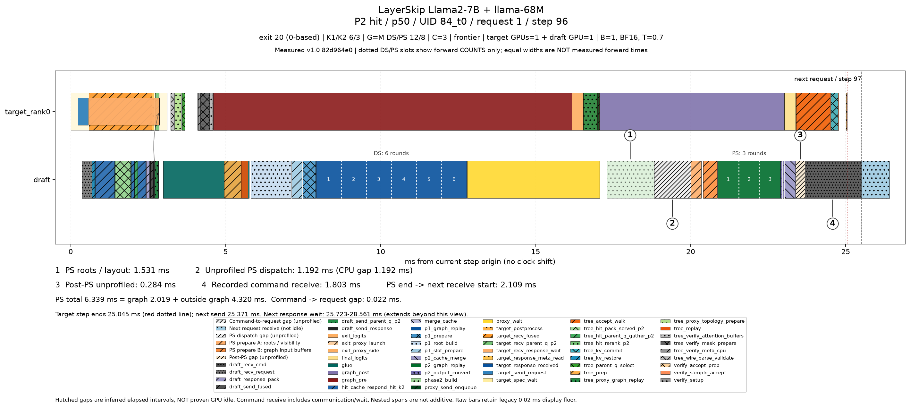
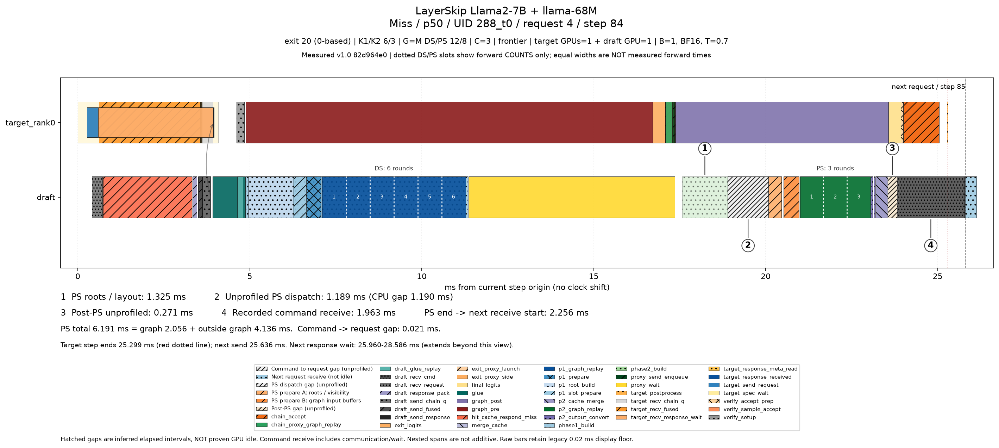
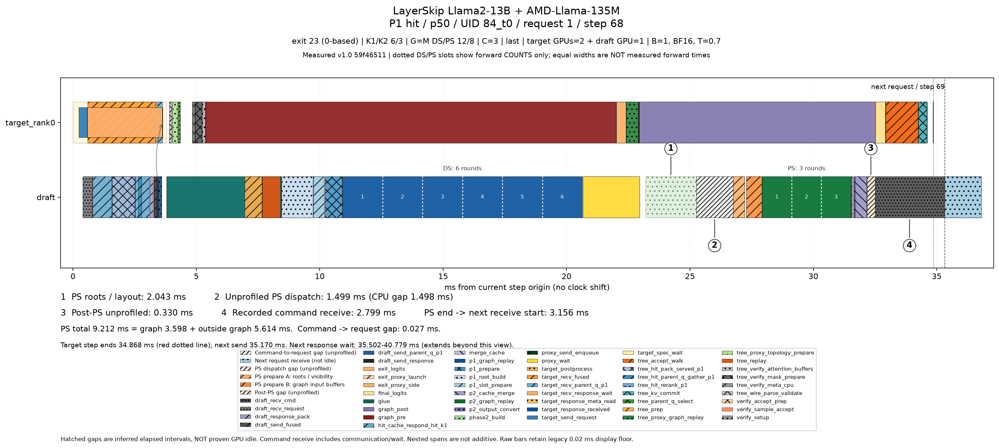
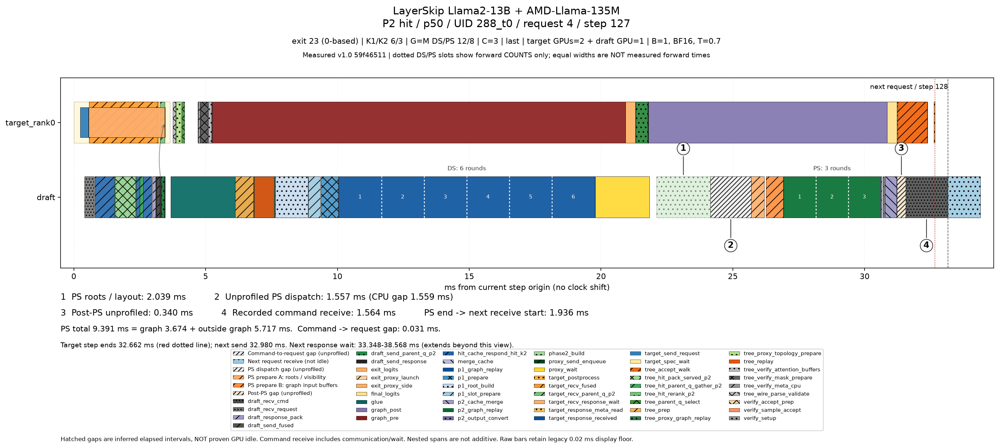
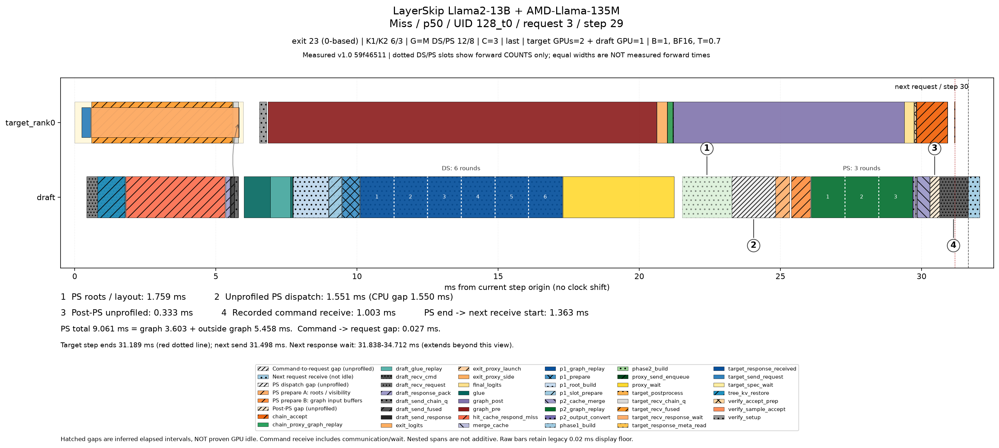
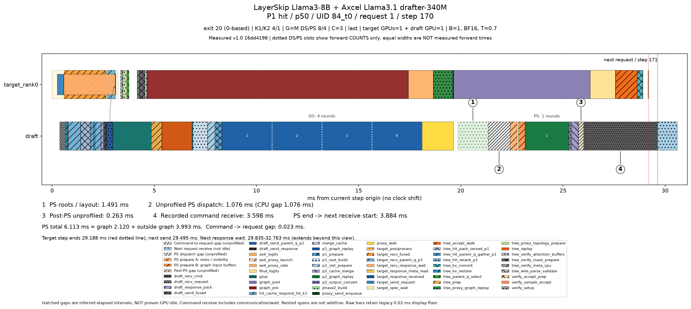
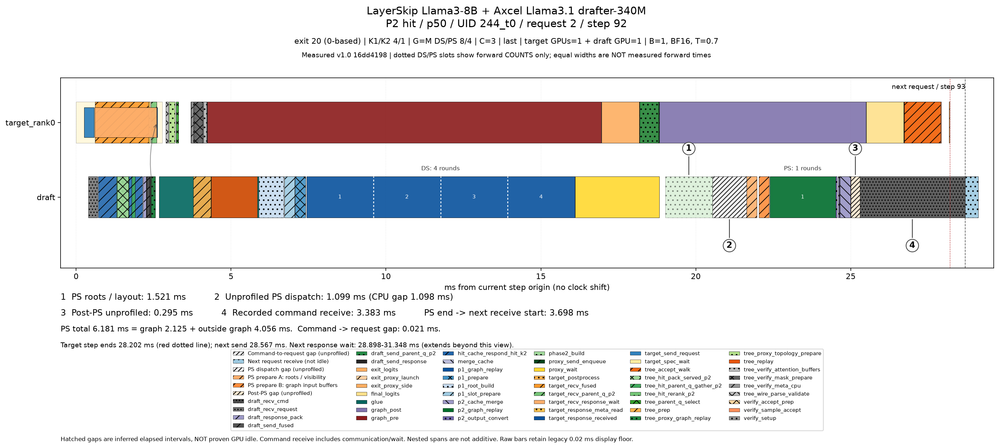
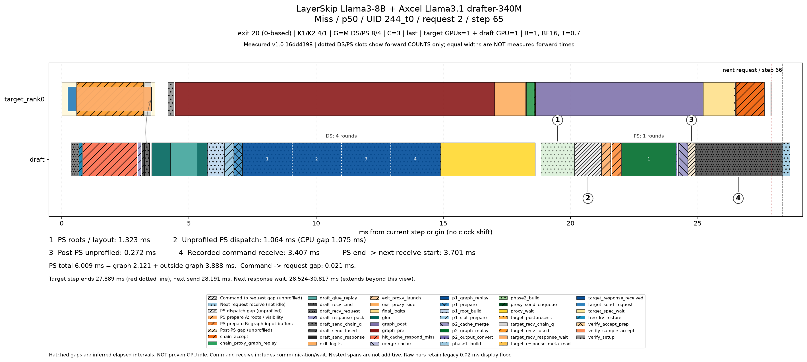
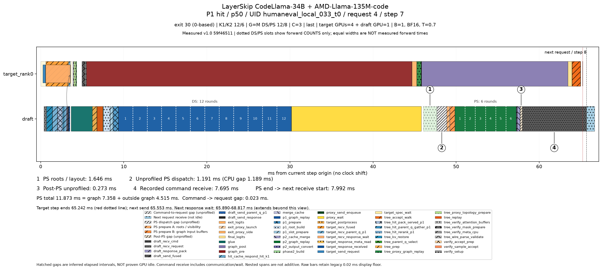
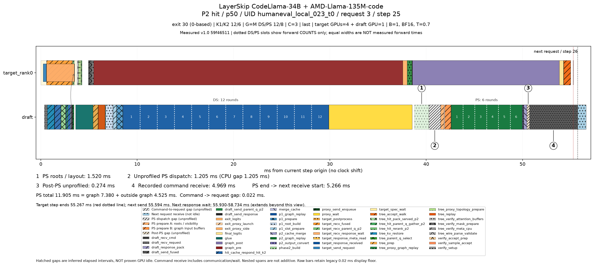
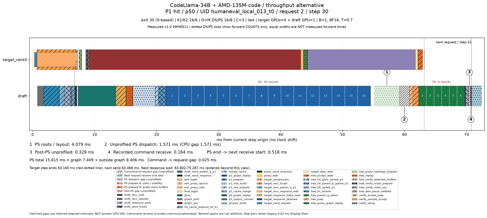
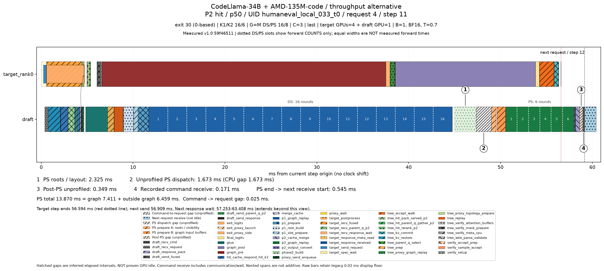
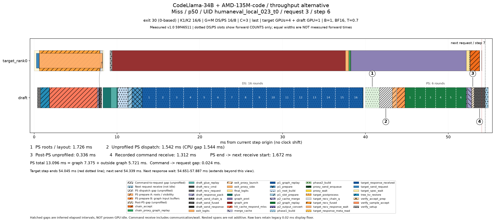